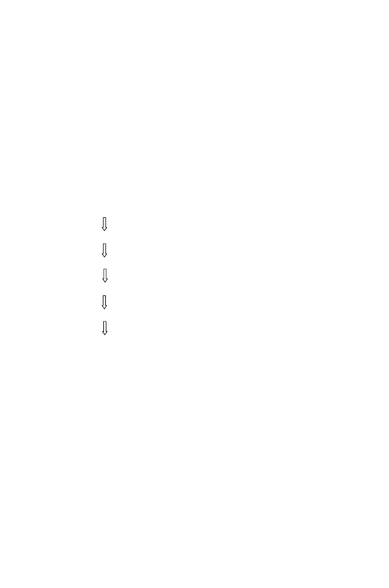

128
5 Genome Rearrangements
Since in the second string immediately above
g
i
−
1
is followed by
g
j
, there is one
breakpoint after
g
i
−
1
. Similarly, since
g
i
is followed by
g
j
+1
, there is another
breakpoint just before
g
j
+1
. The inversion has produced two breakpoints.
Let’s now return to our previous example
G
= 3 7 2 6 4 1 5. We want this
to represent a circular array of permuted elements. This means that the first
element in our linear representation is connected to the last element. If the first
element is in the correct position, then we do not consider it to be preceded
by a breakpoint, even if the last element is not yet in the correct position.
(We don’t want to count the same breakpoint twice.) By our definition of
breakpoint shown above, you can see that there are seven breakpoints. In-
stead of transforming
G
to
I
by transposition of elements, we can effect this
transformation by successive inversions (reversals) of two or more elements
(brackets enclosing the elements to be inverted in each step):
G
:
[3 7 2 6 4 1]5
1 break-point removed (the one
preceding the first element)
1[4 6 2]7 3 5
1 break-point removed
1 2[6 4 7 3]5
2 break-points removed
1 2 3[7 4]6 5
2 break-points removed
1 2 3 4[7 6 5]
1 break-point removed
(the connection to 1 counted in
I
:
1 2 3 4 5 6 7 first step)
As we see from this example, we have removed the seven breakpoints that
were in the original sequence. It should be clear that the maximum number
of breakpoints that can be removed by a reversal is 2. Note that the reversals
do not always remove two breakpoints.
We define
d
(
G, I
) as the
minimum number of reversals
required to convert
G
into
I
. Notice that reversals destroy breakpoints during the transformation
process. If the
number of breakpoints
in
G
is
b
(
G
), then it should be clear that
d
(
G, I
)
≥
b
(
G
)
/
2
.
Also, each reversal can remove at least one breakpoint, so
d
(
G, I
)
≤
b
(
G
)
and it follows that
b
(
G
)
/
2
≤
d
(
G, I
)
≤
b
(
G
)
.
Let’s check this against the example that we just used. We should recognize
that there is a breakpoint just before 3 in
G
(that element should have been